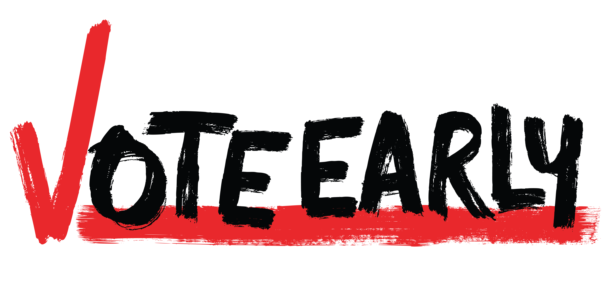

<!doctype html>
<html lang="en">
    <head>
        <meta charset="utf-8">
        <meta http-equiv="X-UA-Compatible" content="IE=edge">
        <meta name="viewport" content="initial-scale=1,user-scalable=no,maximum-scale=1,width=device-width">
        <meta name="mobile-web-app-capable" content="yes">
        <meta name="apple-mobile-web-app-capable" content="yes">
        <link rel="stylesheet" href="css/leaflet.css">
        <link rel="stylesheet" href="css/L.Control.Layers.Tree.css">
        <link rel="stylesheet" href="css/L.Control.Locate.min.css">
        <link rel="stylesheet" href="css/qgis2web.css">
        <link rel="stylesheet" href="css/fontawesome-all.min.css">
        <link rel="stylesheet" href="css/leaflet.photon.css">
        <link rel="stylesheet" href="css/leaflet-measure.css">
        <link rel="preconnect" href="https://fonts.googleapis.com">
        <link rel="preconnect" href="https://fonts.gstatic.com" crossorigin>
        <link href="https://fonts.googleapis.com/css2?family=Overpass:ital,wght@0,100..900;1,100..900&family=Permanent+Marker&display=swap" rel="stylesheet">

        <style>
        html, body, #map {
            width: 100%;
            height: 100%;
            padding: 0;
            margin: 0;
        }

                /* TITLE AND LOGO STYLE */
        .custom-map-panel {
            background: rgba(255,255,255,0.40); /*white with 50% opacity*/
            padding: 2px;
            border-radius: 2px;
            max-width: 25%; 
            text-align: justify;           
            display: flex;
            flex-direction: column;
            align-items:flex-start;
            gap: 2px;
        }

        .custom-map-panel img {
            max-width: min(100%, 25vw);
            height: auto;
            border-radius: 0px;
        }

        .custom-map-panel h1 {
            margin: 0;
            font-size: clamp(12px, 5vw, 72px); /* Adjust the font size as needed */
            font-family: 'Permanent Marker', cursive; /* Use the same font as the main title */ 
            color: #fabe39; /* Match the color of the main title */
            text-shadow:
                -3px -3px 0 black,
                3px -3px 0 black,
                -3px 3px 0 black,
                3px 3px 0 black;
        }

        .custom-map-panel h2 {
            margin: 0;
            font-size: clamp(20px, 3vw, 36px); /* Adjust the font size as needed */
            line-height: 1.2;
            text-align: center;
            
            font-family: 'Overpass', sans-serif; /* different font */ 
            color: #0076c0; /* Match the color of the main title */
            text-shadow:
        }
        

        .custom-map-panel p {   
            margin: 0;
            width: 100px;
            font-size: clamp(12px, 1.5vw, 20px); /* Adjust the font size as needed */
            text-align: center;
            font-family: 'Overpass', sans-serif;
            color: #333; /* Set the text color */
        }

        .custom-map-panel2 {
            background: rgba(255,255,255,0.50); /*white with 85% opacity*/
            padding: 2px;
            border-radius: 10px;
            max-width: 100%; 
            text-align: left;           
            display: flex;
            flex-direction: column;
            align-items:flex-start;
            gap: 2px;
        }

        .custom-map-panel2 h2 {
            margin: 0;
            font-size: clamp(12px, 3vw, 36px); /* Adjust the font size as needed */
            line-height: 1.2;
            text-align: center;
            font-family: 'Overpass', sans-serif; /* different font */ 
            color: #0076c0; /* Match the color of the main title */
        }
        
        </style>
        <title>Run to the Polls</title>
    </head>
    <body>
        <div id="map">
        </div>
        <script src="js/qgis2web_expressions.js"></script>
        <script src="js/leaflet.js"></script>
        <script src="js/L.Control.Layers.Tree.min.js"></script>
        <script src="js/L.Control.Locate.min.js"></script>
        <script src="js/leaflet.rotatedMarker.js"></script>
        <script src="js/leaflet.pattern.js"></script>
        <script src="js/leaflet-hash.js"></script>
        <script src="js/Autolinker.min.js"></script>
        <script src="js/rbush.min.js"></script>
        <script src="js/labelgun.min.js"></script>
        <script src="js/labels.js"></script>
        <script src="js/leaflet.photon.js"></script>
        <script src="js/leaflet-measure.js"></script>
        <script src="data/NoKingsMeetups_1.js"></script>
        <script>

        // HIGHLIGHT FEATURE
        var highlightLayer;
        function highlightFeature(e) {
            highlightLayer = e.target;
            highlightLayer.openPopup();
        }

        // INITIALIZE MAP
        var map = L.map('map', {
            zoomControl:false, maxZoom:28, minZoom:1
        })

        // INITIALIZE HASH FOR MAP URL FRAGMENT
        var hash = new L.Hash(map);
        map.attributionControl.setPrefix('<a href="https://github.com/qgis2web/qgis2web" target="_blank">qgis2web</a> &middot; <a href="https://leafletjs.com" title="A JS library for interactive maps">Leaflet</a> &middot; <a href="https://qgis.org">QGIS</a>');
        var autolinker = new Autolinker({truncate: {length: 30, location: 'smart'}});
        // remove popup's row if "visible-with-data"
        function removeEmptyRowsFromPopupContent(content, feature) {
         var tempDiv = document.createElement('div');
         tempDiv.innerHTML = content;
         var rows = tempDiv.querySelectorAll('tr');
         for (var i = 0; i < rows.length; i++) {
             var td = rows[i].querySelector('td.visible-with-data');
             var key = td ? td.id : '';
             if (td && td.classList.contains('visible-with-data') && feature.properties[key] == null) {
                 rows[i].parentNode.removeChild(rows[i]);
             }
         }
         return tempDiv.innerHTML;
        }
        // modify popup if contains media
        function addClassToPopupIfMedia(content, popup) {
            var tempDiv = document.createElement('div');
            tempDiv.innerHTML = content;
            var imgTd = tempDiv.querySelector('td img');
            if (imgTd) {
                var src = imgTd.getAttribute('src');
                if (/\.(jpg|jpeg|png|gif|bmp|webp|avif)$/i.test(src)) {
                    popup._contentNode.classList.add('media');
                    var img = popup._contentNode.querySelector('td img');
                    if (img) {
                        // If already loaded (cache), update immediately
                        if (img.complete && img.naturalHeight > 0) {
                            popup.update();
                        } else {
                            img.addEventListener('load', function() {
                                popup.update();
                            });
                            img.addEventListener('error', function() {
                                popup.update();
                            });
                        }
                    }
                } else if (/\.(mp3|wav|ogg|aac)$/i.test(src)) {
                    var audio = document.createElement('audio');
                    audio.controls = true;
                    audio.src = src;
                    imgTd.parentNode.replaceChild(audio, imgTd);
                    popup._contentNode.classList.add('media');
                    setTimeout(function() {
                        popup.setContent(tempDiv.innerHTML);
                        popup.update();
                    }, 10);
                } else if (/\.(mp4|webm|ogg|mov)$/i.test(src)) {
                    var video = document.createElement('video');
                    video.controls = true;
                    video.src = src;
                    video.style.width = "400px";
                    video.style.height = "300px";
                    video.style.maxHeight = "60vh";
                    video.style.maxWidth = "60vw";
                    imgTd.parentNode.replaceChild(video, imgTd);
                    popup._contentNode.classList.add('media');
                    // Aggiorna il popup quando il video carica i metadati
                    video.addEventListener('loadedmetadata', function() {
                        popup.update();
                    });
                    setTimeout(function() {
                        popup.setContent(tempDiv.innerHTML);
                        popup.update();
                    }, 10);
                } else {
                    popup._contentNode.classList.remove('media');
                }
            } else {
                popup._contentNode.classList.remove('media');
            }
        }

        // TITLE CONTROL
        var title = new L.Control({'position':'topright'});

        title.onAdd = function (map) {
            this._div = L.DomUtil.create('div', 'custom-map-panel');
            this.update();
            return this._div;
        };
        title.update = function () {
            this._div.innerHTML = '\
            <h1>Baltimore</h1>\
            <h2>Run to the Polls Sign Wave</h2>'
        };

        title.addTo(map);
        var zoomControl = L.control.zoom({
            position: 'topleft'
        }).addTo(map);

        // SIGN UP CONTROL 
        var signUp = new L.Control({'position':'bottomleft'});

        signUp.onAdd = function (map) {
            this._div = L.DomUtil.create('div', 'custom-map-panel2');
            this.update();
            return this._div;
        };
        signUp.update = function () {
            this._div.innerHTML = '<h2>Sign up <a href="https://forms.gle/2meqNobohWvV2vHW8" target="_blank">here</a></h2>';
        };

        signUp.addTo(map);

        // ZOOM CONTROL
        var zoomControl = L.control.zoom({
            position: 'topleft'
        }).addTo(map);

        // LOCATE CONTROL
        L.control.locate({locateOptions: {maxZoom: 19}}).addTo(map);
        var measureControl = new L.Control.Measure({
            position: 'topleft',
            primaryLengthUnit: 'feet',
            secondaryLengthUnit: 'miles',
            primaryAreaUnit: 'sqfeet',
            secondaryAreaUnit: 'sqmiles'
        });
        measureControl.addTo(map);
        document.getElementsByClassName('leaflet-control-measure-toggle')[0].innerHTML = '';
        document.getElementsByClassName('leaflet-control-measure-toggle')[0].className += ' fas fa-ruler';
        var bounds_group = new L.featureGroup([]);
        function setBounds() {
            if (bounds_group.getLayers().length) {
                map.fitBounds(bounds_group.getBounds());
            }
        }
        map.createPane('pane_OSMHumanitarianDataModel_0');
        map.getPane('pane_OSMHumanitarianDataModel_0').style.zIndex = 400;
        var layer_OSMHumanitarianDataModel_0 = L.tileLayer('http://a.tile.openstreetmap.fr/hot/{z}/{x}/{y}.png', {
            pane: 'pane_OSMHumanitarianDataModel_0',
            opacity: 1.0,
            attribution: '',
            minZoom: 1,
            maxZoom: 28,
        });
        layer_OSMHumanitarianDataModel_0;
        map.addLayer(layer_OSMHumanitarianDataModel_0);
        function pop_NoKingsMeetups_1(feature, layer) {
            layer.on({
                mouseout: function(e) {
                    if (typeof layer.closePopup == 'function') {
                        layer.closePopup();
                    } else {
                        layer.eachLayer(function(feature){
                            feature.closePopup()
                        });
                    }
                },
                mouseover: highlightFeature,
            });

            const googleMapsUrl = `https://www.google.com/maps?q=${feature.geometry.coordinates[1]},${feature.geometry.coordinates[0]}`;
            const googleMapsLinkHTML = googleMapsUrl ? '<a href="' + googleMapsUrl + '" target="_blank">View on Google Maps</a>' : '';
            const appleMapsUrl = `https://maps.apple.com/?q=${feature.geometry.coordinates[1]},${feature.geometry.coordinates[0]}`;
            const appleMapsLinkHTML = appleMapsUrl ? '<a href="' + appleMapsUrl + '" target="_blank">View on Apple Maps</a>' : '';
            const mapsLinksHTML = (googleMapsLinkHTML || appleMapsLinkHTML) ? '<p>' + [googleMapsLinkHTML, appleMapsLinkHTML].filter(Boolean).join(' | ') + '</p>' : '';    
 
            var popupContent = '<table>\
                    <tr>\
                        <th scope="row">Site Name</th>\
                        <td>' + (feature.properties['Site Name'] !== null ? autolinker.link(String(feature.properties['Site Name']).replace(/'/g, '\'').toLocaleString()) : '') + '</td>\
                    </tr>\
                    <tr>\
                        <th scope="row">Location</th>\
                        <td>' + (feature.properties['Location'] !== null ? autolinker.link(String(feature.properties['Location']).replace(/'/g, '\'').toLocaleString()) : '') + '</td>\
                    </tr>\
                    <tr>\
                        <th scope="row">Start Time</th>\
                        <td>' + (feature.properties['Start Time'] !== null ? autolinker.link(String(feature.properties['Start Time']).replace(/'/g, '\'').toLocaleString()) : '') + '</td>\
                    </tr>\
                    <tr>\
                        <th scope="row">Maps</th>\
                        <td>' + mapsLinksHTML + '</td>\
                    </tr>\
                </table>';
            var content = removeEmptyRowsFromPopupContent(popupContent, feature);
			layer.on('popupopen', function(e) {
				addClassToPopupIfMedia(content, e.popup);
			});
			layer.bindPopup(content, { maxHeight: 400 });
        }

        function style_NoKingsMeetups_1_0() {
            return {
                pane: 'pane_NoKingsMeetups_1',
        rotationAngle: 0.0,
        rotationOrigin: 'center center',
        icon: L.icon({
            iconUrl: 'markers/NoKingsMeetups_1.svg',
            iconSize: [40.0, 40.0]
        }),
                interactive: true,
            }
        }
        map.createPane('pane_NoKingsMeetups_1');
        map.getPane('pane_NoKingsMeetups_1').style.zIndex = 401;
        map.getPane('pane_NoKingsMeetups_1').style['mix-blend-mode'] = 'normal';
        var layer_NoKingsMeetups_1 = new L.geoJson(json_NoKingsMeetups_1, {
            attribution: '',
            interactive: true,
            dataVar: 'json_NoKingsMeetups_1',
            layerName: 'layer_NoKingsMeetups_1',
            pane: 'pane_NoKingsMeetups_1',
            onEachFeature: pop_NoKingsMeetups_1,
            pointToLayer: function (feature, latlng) {
                var context = {
                    feature: feature,
                    variables: {}
                };
                return L.marker(latlng, style_NoKingsMeetups_1_0(feature));
            },
        });
        bounds_group.addLayer(layer_NoKingsMeetups_1);
        map.addLayer(layer_NoKingsMeetups_1);
        const url = {"Nominatim OSM": "https://nominatim.openstreetmap.org/search?format=geojson&addressdetails=1&",
        "France BAN": "https://api-adresse.data.gouv.fr/search/?"}
        var photonControl = L.control.photon({
            url: url["Nominatim OSM"],
            feedbackLabel: '',
            position: 'topleft',
            includePosition: true,
            initial: true,
            // resultsHandler: myHandler,
        }).addTo(map);
        photonControl._container.childNodes[0].style.borderRadius="10px"
        // Create a variable to store the geoJSON data
        var x = null;
        // Create a variable to store the marker
        var marker = null;
        // Add an event listener to the Photon control to create a marker from the returned geoJSON data
        var z = null;
        photonControl.on('selected', function(e) {
            console.log(photonControl.search.resultsContainer);
            if (x != null) {
                map.removeLayer(obj3.marker);
                map.removeLayer(x);
            }
            obj2.gcd = e.choice;
            x = L.geoJSON(obj2.gcd).addTo(map);
            var label = typeof obj2.gcd.properties.label === 'undefined' ? obj2.gcd.properties.display_name : obj2.gcd.properties.label;
            obj3.marker = L.marker(x.getLayers()[0].getLatLng()).bindPopup(label).addTo(map);
            map.setView(x.getLayers()[0].getLatLng(), 17);
            z = typeof e.choice.properties.label === 'undefined'? e.choice.properties.display_name : e.choice.properties.label;
            console.log(e);
            e.target.input.value = z;
        });
        var search = document.getElementsByClassName("leaflet-photon leaflet-control")[0];
        search.classList.add("leaflet-control-search")
        search.style.display = "flex";
        search.style.backgroundColor="rgba(255,255,255,0.5)" 

        // Create the new button element
        var button = document.createElement("div");
        button.id = "gcd-button-control";
        button.className = "gcd-gl-btn fa fa-search search-button";

        // Insert the button at the beginning of the search control
        search.insertBefore(button, search.firstChild);
        last = search.lastChild;
        last.style.display = "none";
        button.addEventListener("click", function (e) {
            if (last.style.display === "none") {
                last.style.display = "block";
            } else {
                last.style.display = "none";
            }
        });
        setBounds();
        var i = 0;
        layer_NoKingsMeetups_1.eachLayer(function(layer) {
            var context = {
                feature: layer.feature,
                variables: {}
            };
            layer.bindTooltip((exp_label_NoKingsMeetups_1_eval_expression(context) !== null?String('<div style="color: #323232; font-size: 10pt; font-family: \'MV Boli\', sans-serif;">' + exp_label_NoKingsMeetups_1_eval_expression(context)).replace(/\\n/g, '<br>') + '</div>':''), {permanent: true, offset: [15, -16], className: 'css_NoKingsMeetups_1'});
            labels.push(layer);
            totalMarkers += 1;
              layer.added = true;
              addLabel(layer, i);
              i++;
        });
        resetLabels([layer_NoKingsMeetups_1]);
        map.on("zoomend", function(){
            resetLabels([layer_NoKingsMeetups_1]);
        });
        map.on("layeradd", function(){
            resetLabels([layer_NoKingsMeetups_1]);
        });
        map.on("layerremove", function(){
            resetLabels([layer_NoKingsMeetups_1]);
        });
        </script>        
    </body>
</html>
